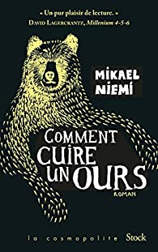

Filmographie
comment cuire un ours, Mikael Niemi
En 1852, Lars Levi Laestadius, botaniste émérite, pasteur haut en couleur du petit village de Kengis tente de combattre l’athéisme et l’alcoolisme de ses paroissiens. Contre l'avis des villageois, Laestadius recueille un jeune garçon sámi, affamé et illettré, Jussi, qu’il va secrètement formé à la botanique. Lorsqu'une servante est retrouvée morte dans la forêt, ce crime est imputé à… un ours. Laestadius n'y croit pas un instant. Quand une deuxième jeune fille vient à disparaître, Laestadius décide de mener l'enquête accompagné de Jussi.
le dernier lapon, Olivier Truc
À Kautokeino, grand village sami au milieu de la toundra, un tambour spécial est volé. La mort d’un éleveur de rennes n’arrange rien à l’affaire. Deux enquêteurs de la police des rennes Klemet Nango et son équipière Nina Nansen vont mener l'enquête persuadés que les 2 affaires sont liées. Mais à Kautokeino on n’aime pas remuer les vieilles histoires et ils sont renvoyés. A la pacification des éternelles querelles entre éleveurs de rennes dont les troupeaux se mélangent.
la loi des sames, Lars Pettersson
Kautokeino, localité où des Sames continuent à vivre de l’élevage des rennes, selon la tradition. Anna Magnusson, jeune substitut du procureur à Stockholm, mène une existence à mille lieues de ses origines sames. Jusqu’au jour où sa grand-mère l’appelle à l’aide : son cousin Nils Mattis est accusé de viol. Une fois sur place, rien ne se passe comme prévu. Anna se trouve confrontée aux lois implicites qui règnent dans ces contrées reculées. cette affaire de viol n’est que la partie émergée d’une situation bien plus complexe. Commence pour elle une périlleuse enquête, qui lui fera redécouvrir ses racines et l’univers de ses ancêtres.